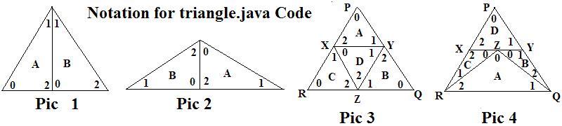

Judge's Notes on
Triangle Cuts

The figures above are referenced in the source code triangle.java,
using the triangle labels A-D and labeling the angles with array
indices 0-2. Pic
3 and 4 are also referenced below in the discussion of cases where
there is no cut from one vertex of the original triangle straight to a
point on the opposite side. There the additional labels for
points P, Q, R,
X, Y, and Z are used. The argument below shows that the solution
considers all the necessary cases where the original triangle is not
directly cut into two triangles.
Pattern Cases of a triangle T = PQR is cut in pieces three times,
generating atomic triangles, A, B, C, D:
Each pair of subcases below partition all the possible cases they are
concerned with.
- Triangle T is cut along a straight line running from one vertex
of T to the
opposite side.
- There is no cut from a vertex of T to the opposite side.
The first cut must go from some interior point of one side of T to
another. This cuts off the one of the vertices of T, (call it P),
and leaves a quadrilateral, (call it XYQR as in Pic 3 and 4). The
remaining two cuts must come from the quadrilateral, since the only way
to cut the quadrilateral into two triangles with a single cut would be
to cut between opposite vertices, either QX or RY, and either of these
would be a cut from a vertex of T all the way across T.
Furthermore the next cut must have an endpoint somewhere along
QR: If not, the remaining part that does contain QR and at
least parts of QY and RX is either a quadrilateral that again can only
be split into triangles with a cut all the way across T from Q or R, or
it includes a vertex in the interior of XY, and is a pentagon which
cannot be cut into two triangles at all.
- The second cut has an endpoint at Z on the interior of
QR. The other endpoint cannot be in the interior of XY because
two quadrilaterals are produced that cannot both be cut in triangles
with one more cut. It cannot go to the interior of QY or RX
because it forms a pentagon that cannot be split into two
triangles. Hence it must end at X or Y (suppose X). The
quadrilateral ZXYQ again may not be cut across T on QX, so it must be
cut on ZY, generating the pattern of Pic 3 above.
- The second cut has an endpoint at Q or R ( call it Q). It
cannot go all the way across T to a point on RX, so it must intersect a
point Z in the interior of XY. The remaining quadrilateral QZXR
can only be cut in triangles without crossing all of T from vertex Q by
using RZ, generating the pattern of Pic 4.
Cutting a Triangle Twice
Whenever a triangle is cut only twice, ending up with three triangles,
one of the cuts must go all the way across from a vertex: Even if
the first cut does not go all the way across and generates the
quadrilateral XYQR as above, the single remaining cut must go all the
way across T on QX or RY.
Ignoring side length.
With a single cut being made each time, the lengths of the sides can
always be made to work out correctly. The common length of the
part cut (or joined in my approach to the algorithm) always allows one
single factor to be determined to allow one part to be scaled to
fit.
The original (junked) version of this problem allowed situations like
Figure 4, where sometimes a part can only be added by matching two
different edges, and the measurement of edges becomes necessary to
completely consider these cases. The current statement of the
problem avoids this considerable complication.
Judge's Data
Most solutions are formed from successively joining two
triangles. Input triangles are called A-D, and notation like (AB)
means A and B with A on the left and B on the right as viewed in Pic 1
or Pic 2. The angles are also shown if it is a partial result:
Dataset
1-4. Examples
5. First example with last triangle flipped (also in sample input)
6. Pic 3 with A in center
7. Pic 4 with C at the top and D at the bottom.
8. (BC 70 30 80)(AD 100 30 50)
9. (BA 45 85 50)(CD 60 95 25)
10. (AC 20 100 60)(DB 15 85 80)
11. (BD 20 105 55)(AC 75 40 65)
12. (CA 45 30 105)(DB 35 70 75)
13. (AD 95 50 35)(CB 35 60 85)
14. (A(DB 75 45 60) 40 80 60)C
15. D(C(AB 50 50 80) 50 80 50)
16. A((BC 80 80 20)D 20 100 60 )
17. D((BC 10 20 150)A 10 30 140)
18. fails with the daughter's rules
19. lots of angles go together, but fails without a flip
20. Pic 3 among other possibilites
21-25. Sets 6-10 with the big triangle flipped; all fail
26-30. Sets 11-15 with the last triangle flipped; all fail